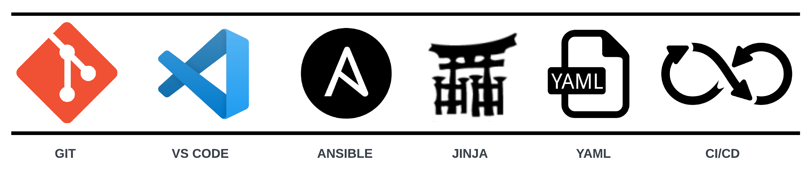

Day 0

When I first got into networking as an intern at AT&T back in 2014, network automation was just coming onto the scene. People were throwing around different buzz words and acronymns left and right but it seemed that few people really knew exactly what they were referring to when they talked about the subject. They just threw around these marketing terms in an attempt to describe some future vision of autonomous networks that run themselves.
Nearly 10 years later, we're definitely not at the point of self-driving networks. However, the industry seems to have converged on a set of best practices that allow organizations to operate their network in a much more automated fashion. By adopting development methods used in traditional software development, the industry has created tools that abstract network designs and device configurations, test these configurations and their effects pre-deployment, and validate that these changes don't break anything after they've actually been deployed. And all changes are tracked using some form of version control (probably git). This type of method for managing network configurations is commonly known as Infrastructure as Code where all of these config management stages are performed in a CI/CD fashion. If you don't know what any of that means, don't worry. The concept has only just recently made its way over to networking. But this is the type of approach that the big cloud titans use to manage their networks. It allows them to make changes rapidly, reliably, and frequently.
Originally, I was going to attempt to write some sort of mini-series that walks a beginner through some of the fundamental tools key to building a good automation foundation. But some of my colleagues at Arista beat me to it. They created a REALLY great vendor agnostic workshop linked below that hits on the building blocks of this IaC mindset. The concepts covered in the workshop are at the heart of pretty much every automation framework. They will eventually enable you to build out full fledge CI/CD pipelines that let you operate your networks like the Microsofts and Googles of the world.
Arista Networks Automation Fundamentals Workshop
The whole workshop does take about a day to complete but it's a great resource for beginners looking to get serious with network automation.